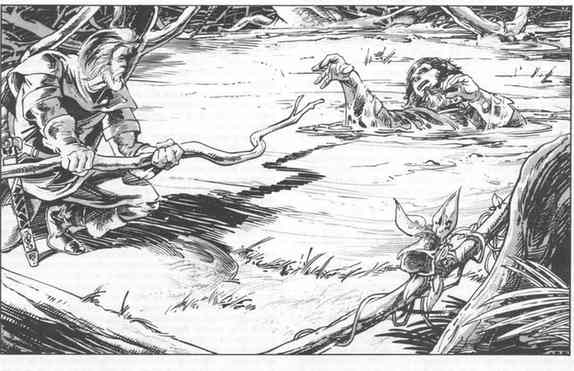

流沙 · Quicksand

沼泽或潮湿的低洼地区，角色可能偶然踏入流沙，即水把地面浸透到足够广、足够深，使地形变得厚重而泥泞的一片区域。尽管叫“流沙”，它也可以由土组成；那种情况下，它其实只是泥坑，可按前文泥石流部分处理。
真正由沙组成的流沙比“泥流沙”更危险，因为水沙混合物通常不像泥坑那样稠，所以走入或跌入其中的人会更快下沉。但与流行说法相反，流沙不会把受害者“吸”到地面下。保持清醒、让头部在表面上的人可以踩水自救；拥有游泳熟练项者还可以沿表面移动到安全地点。
跌入流沙的角色处境与陷入泥石流的人相同。附近同伴可以伸出木杆或树枝，让不会游泳的受害者抓住并把自己拉出来。进入流沙救人者必须拥有游泳熟练项；否则他会陷入同样处境。会游泳的救援者可以进入流沙并把受害者拉到安全处，不会危及自己。